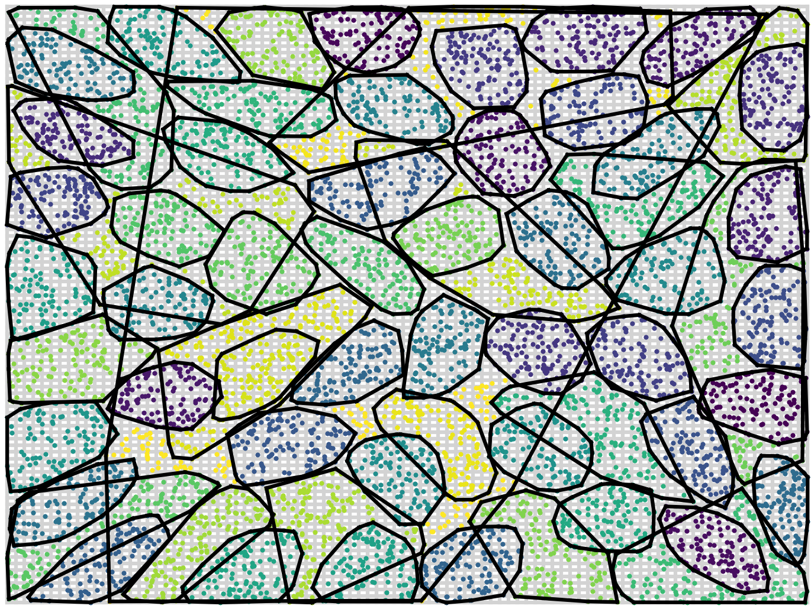
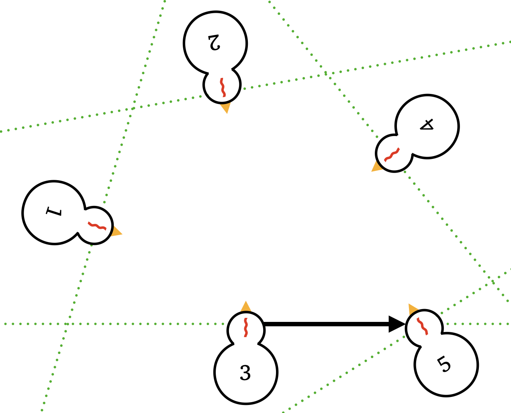
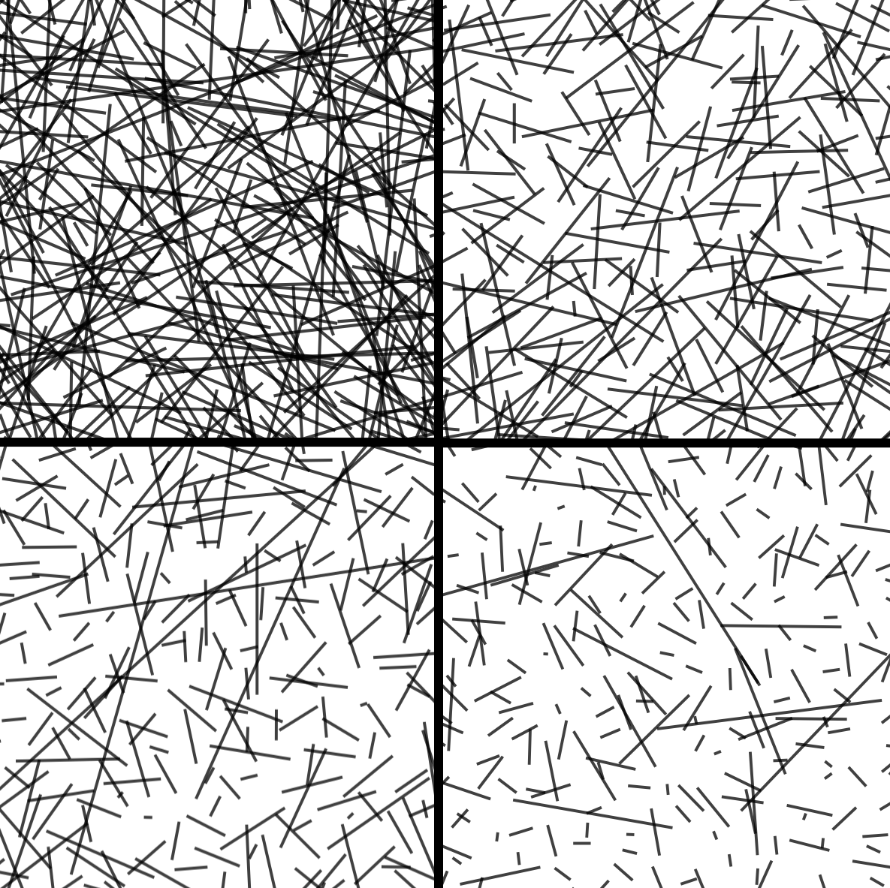
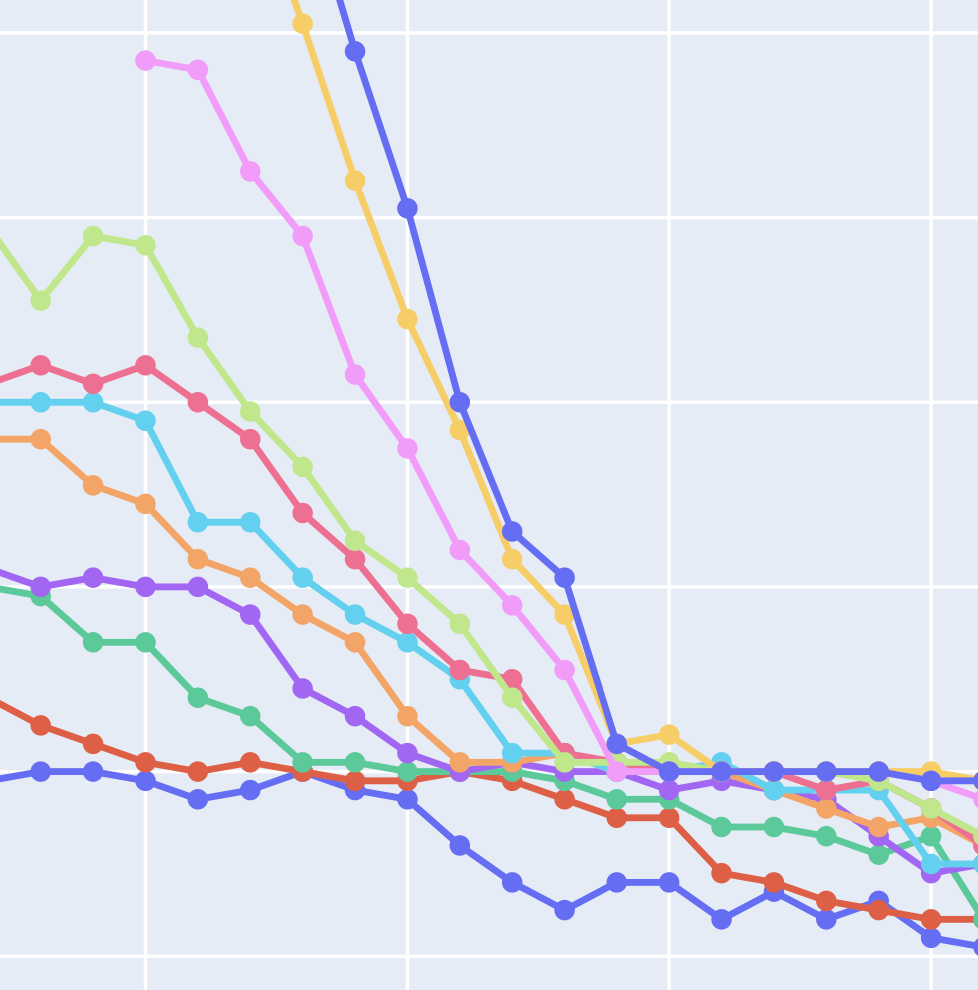
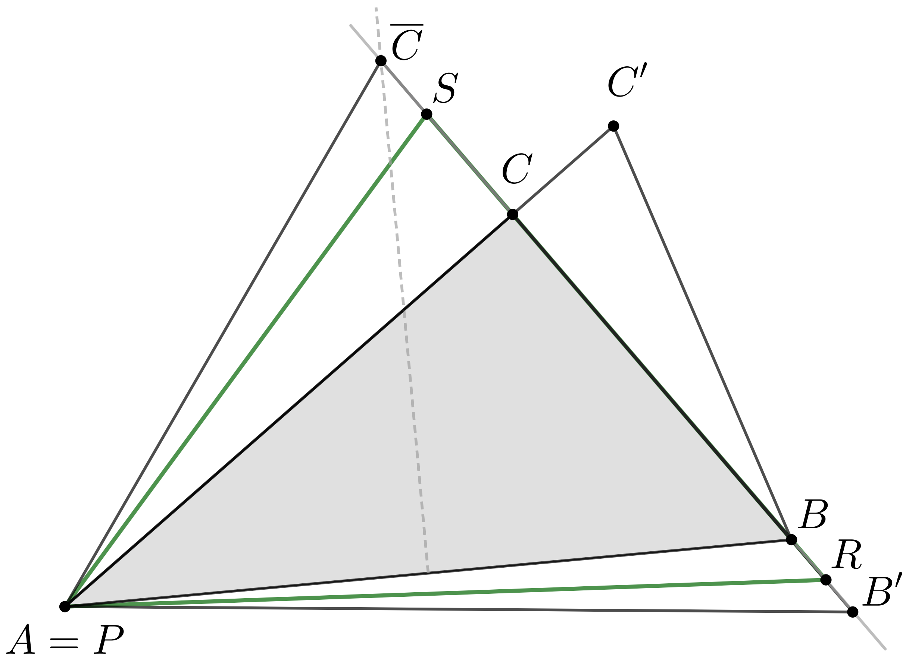
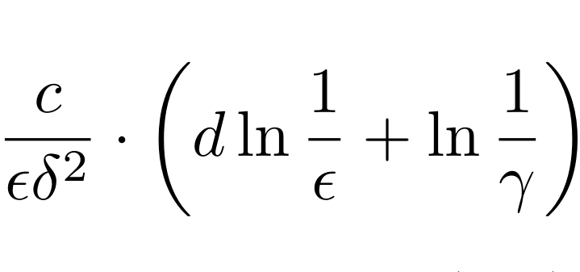
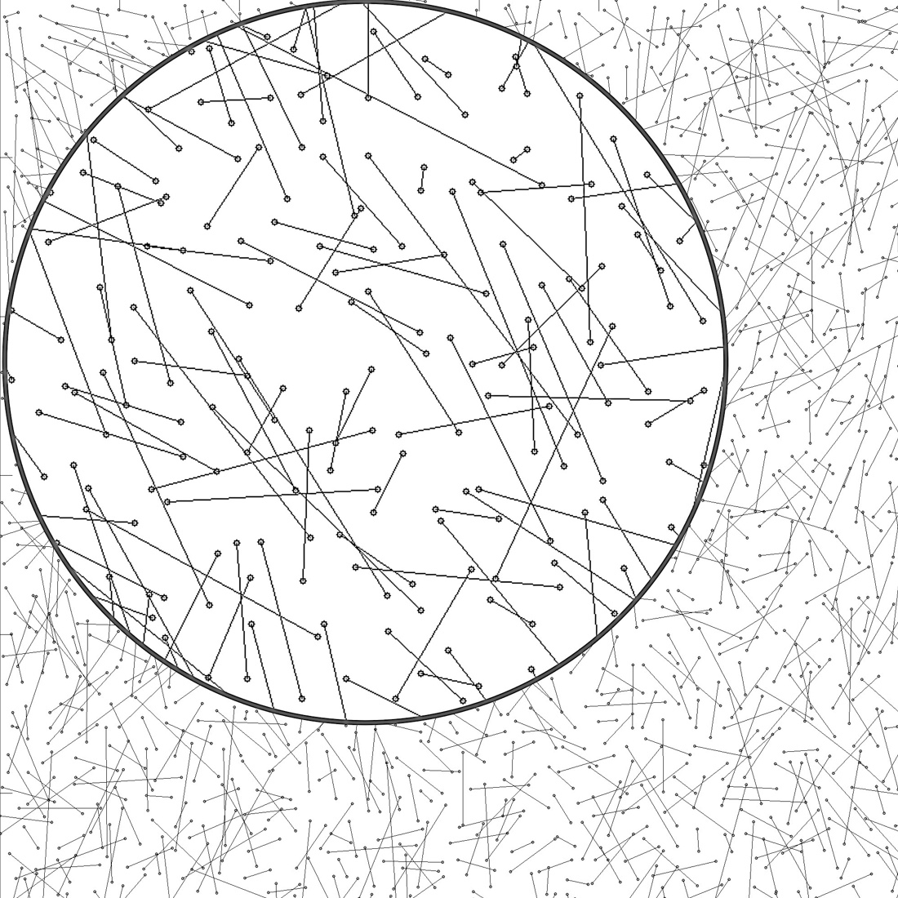
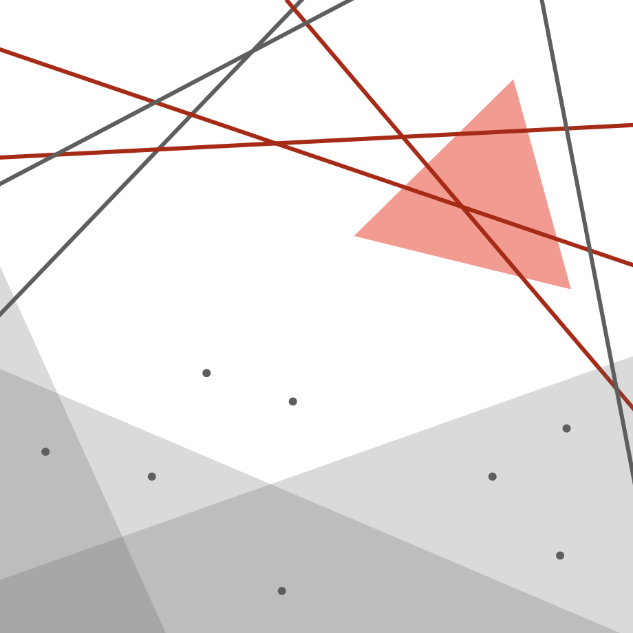
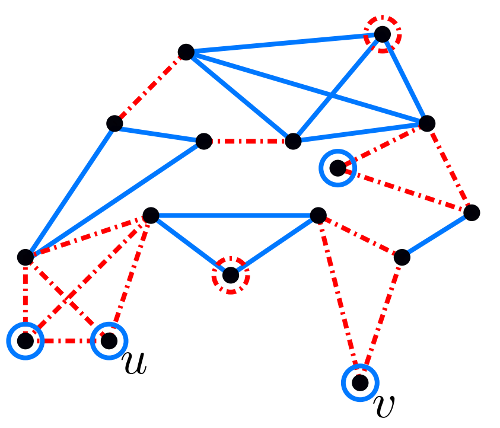

Publications
-

A Greedy Algorithm for Low-Crossing Partitions for General Set Systems
with A. Louvet, and N. H. Mustafa
Proceedings of the Symposium on Algorithm Engineering and Experiments (ALENEX 2025) pdf
-

Forbidden Patterns in Temporal Graphs Resulting from Encounters in a Corridor
with M. Habib, MH. Nguyen, M. Rabie, and L. Viennot
Journal of Computer and System Sciences Volume 150, June 2025, 103620 pdf
-

An Optimal Sparsification Lemma for Low-Crossing Matchings and its Applications to Discrepancy and Approximations
with N. H. Mustafa
International Colloquium on Automata, Languages and Programming (ICALP 2024) pdf
-

Practical Computation of Graph VC-Dimension
with D. Coudert, G. Ducoffe, and L. Viennot
in Symposium on Experimental Algorithms (SEA 2024), pdf
-

Optimal embedded and enclosing isosceles triangles
with Á. Ambrus, G. Kiss, J. Pach, G. Somlai
in International Journal of Foundations of Computer Science 34(7): 737-760 (2023), pdf
-

Optimal Approximations Made Easy
with N. H. Mustafa
in Information Processing Letters, Volume 176, June 2022, 106250, pdf -

Escaping the Curse of Spatial Partitioning: Matchings With Low Crossing Numbers and Their Applications
with N. H. Mustafa
in International Symposium on Computational Geometry (SoCG 2021), invited to special issue. pdf -

Tight Lower Bounds on the VC-dimension of Geometric Set Systems
with A. Kupavskii and N. H. Mustafa
in Journal of Machine Learning Research, 20(81):1−8, 2019. pdf -

Induced Saturation of Graphs
with M. Axenovich
Discrete Mathematics, Volume 342, Issue 4, (2019), pp. 1195--1212., pdf
Preprints
-
On graph classes with constant domination-packing ratio
with M. Bonamy, A. Gujgiczer, and Y. Yuditsky, submitted, pdf -
Algorithms for Discrepancy and Approximations: Fast, Simple, and Practical
with N. H. Mustafa, submitted, pdf
"Simplicity is a great virtue but it requires hard work to achieve it and education to appreciate it. And to make matters worse: complexity sells better."
E. W. Dijkstra
Summary
-
cups of coffee
- 7 publications
- Erdős number: 2